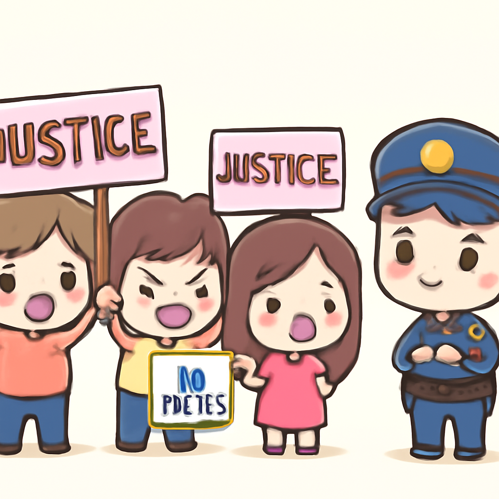

其一 · 伊朗 · 特朗普聲稱與伊朗簽署和平協議
特朗普宣布與伊朗達成協議，將開放霍爾木茲海。
在伊朗，特朗普宣佈已與伊朗簽署一項協議，並計劃於星期五開放霍爾木茲海。不過，具體條款依然保密，讓大家都在猜謎：這是不是新一季《權力遊戲》的導演劇本？不過，這對地區穩定至關重要，因為海峽是全球石油運輸的關鍵路徑。
🔗 原始新聞 ↗
2026-06-16 · 以古觀今，以笑抗愁
特朗普宣布與伊朗達成協議，將開放霍爾木茲海。
在伊朗，特朗普宣佈已與伊朗簽署一項協議，並計劃於星期五開放霍爾木茲海。不過，具體條款依然保密，讓大家都在猜謎：這是不是新一季《權力遊戲》的導演劇本？不過，這對地區穩定至關重要，因為海峽是全球石油運輸的關鍵路徑。
🔗 原始新聞 ↗
基輔一座歷史悠久的教堂遭俄空襲，火勢嚴重。
在烏克蘭基輔，俄羅斯的空襲讓一座歷史悠久的東正教大教堂起火，造成不少聖物損失。這場攻擊不僅是對建築的摧毀，更是對文化遺產的重創。就像是把一部經典電影的結局改成悲劇，令人心痛。
🔗 原始新聞 ↗
南非爵士樂巨星阿卜杜拉·易卜拉欣享年91歲，音樂界失去一位巨匠。
南非的爵士樂界傳來噩耗，傳奇音樂家阿卜杜拉·易卜拉欣於91歲時辭世。他的音樂影響了整整八十年的南非音樂文化，猶如一顆璀璨的明星，照亮了無數音樂人的道路。這讓人不禁感慨，音樂的力量是永恆的。
🔗 原始新聞 ↗
英國宣布計劃禁止16歲以下兒童使用社交媒體，響應全球趨勢。
在英國，首相基爾·斯塔默宣佈將禁止16歲以下的兒童使用社交媒體，這一措施旨在保護孩子們免受網路暴力影響。這就像是給孩子們的網路加了一道安全鎖，雖然大家可能會不滿，但想想這樣他們就不會在網路上浪費時間看貓咪視頻了（或許）。
🔗 原始新聞 ↗
法國女孩的悲劇引發全國性抗議，民眾要求司法改革。

在法國，11歲女孩凱瑟琳·拉梅奧的死亡引發了全國抗議。據悉嫌疑人曾被當局列為可疑人物卻未受到足夠監管，讓民眾感到憤怒。這不僅是對個人安全的呼籲，也是一場關於司法體系的反思，真希望這種悲劇不再重演。
🔗 原始新聞 ↗